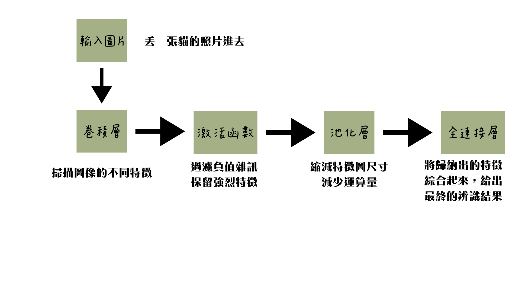
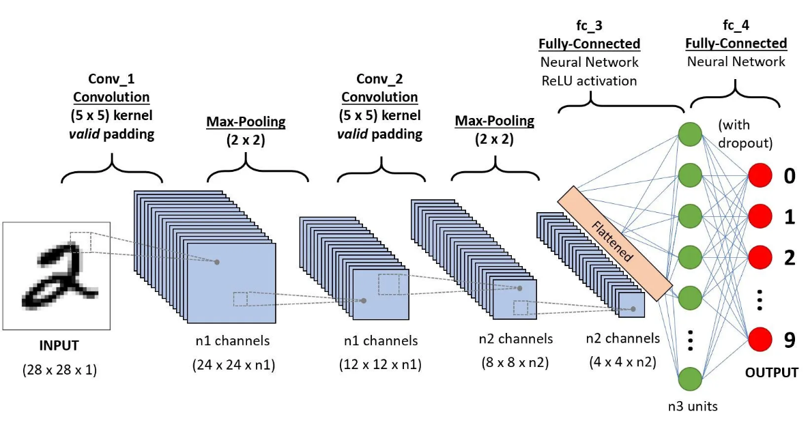
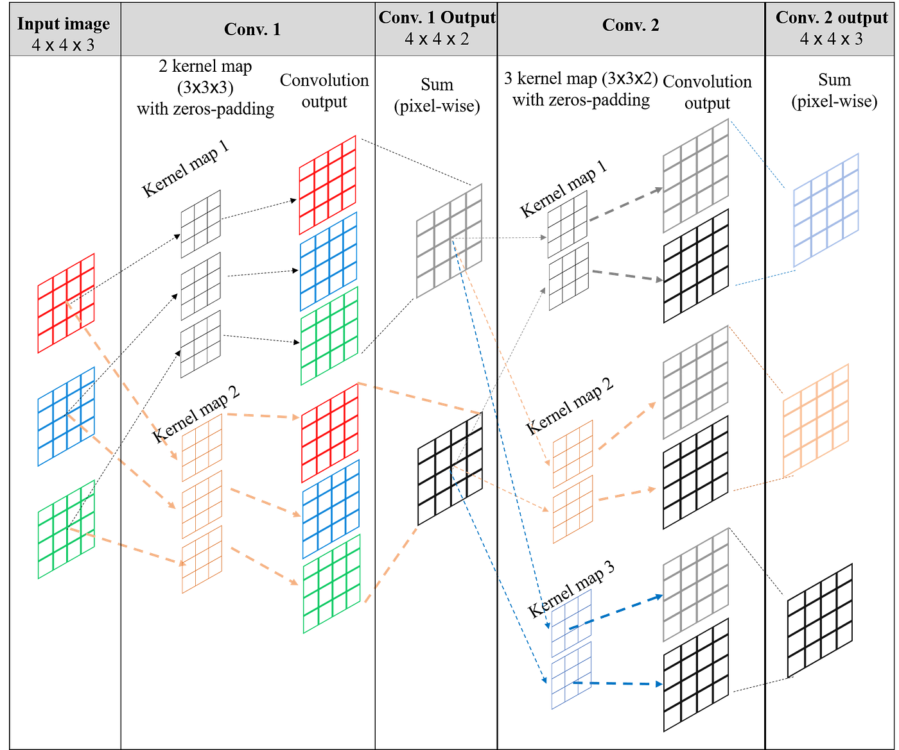
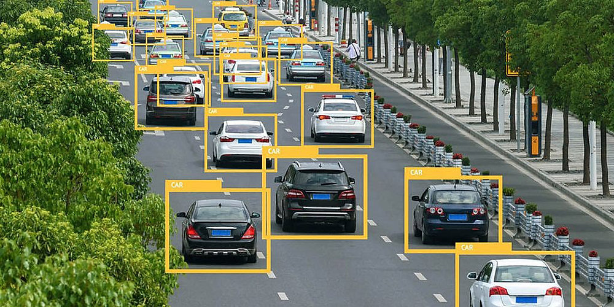

演算法介紹與概念視覺化：什麼是 CNN？
卷積神經網路（Convolutional Neural Network，簡稱 CNN）是一種影像辨識模型，在圖像和語音辨識方面能夠給出極佳的結果。它的架構靈感來自於生物的視覺神經系統，是透過「局部掃描」的方式，去取出圖片中重要的特徵，最後綜合起來去辨識影像。
主要解決什麼問題？
在 CNN 演算法出來之前，影像處理遇到的最大難點是「只要位置偏移了，就不認得了」。而 CNN 透過滑動掃描的機制，確保了無論特徵出現在畫面的哪一個角落，都能被精準捕捉並辨識出來。


CNN 完整網路架構，展示原圖經過卷積（Convolution）、池化（Pooling）逐步提取特徵，並最終展平送入全連接層進行分類的完整流程。

多通道卷積階段，視覺化展示 RGB 三個色彩通道如何各自通過不同的卷積核過濾器提取豐富的空間特徵。
基本運作流程說明
卷積層 (Convolution Layer)
會在圖形上移動，逐步檢測圖像的不同特徵，這些過濾器每次只處理圖像的一個小區域，並計算該區域的特徵。
激活函數 (Activation)
將計算出的負值歸零，只保留有用的強烈訊號（過濾雜訊）。
池化層 (Pooling Layer)
負責縮減特徵圖來減少計算複雜度，並提高計算效率。
全連接層 (Fully Connected)
將前面歸納出的特徵綜合起來，給出最終的辨識結果（例如判斷是貓還是狗）。
互動視覺化說明：卷積掃描運作概念
這裡以視覺化方式呈現前述「卷積層」的運作。您可以點選「5x5 輸入矩陣」更改數值，或點擊「單步執行 / 自動播放」。右側會即時模擬滑動掃描機制，將局部特徵運算後輸出特徵圖，這正是 CNN 確保特徵偏移也能辨識的核心！
預設過濾器設定
播放控制台
當前數學公式計算步驟：
卷積運算對應位置元素相乘後求和：
AI 輔助學習紀錄 (對話互動)
以下為將重點對話梳理後的內容紀錄
我：那這個演算法主要解決了什麼問題？
這個問題問到核心了！要理解 CNN 的偉大之處，我們得先看看在它發明之前，傳統的 AI 演算法（傳統神經網路）在看圖片時，到底遇到了什麼「災難」。
簡單來說，CNN 主要是為了解決傳統 AI 處理影像時的 三大致命傷：
1解決「破壞空間關係」的問題（打散拼圖的災難）
傳統 AI 其實非常「一維」。如果給它一張 2D 的圖片，它做的第一件事，就是把圖片的像素一排一排剪下來，接成一條超級長的「直線」。
就像我給你一盒 1000 片的拼圖，但我不准你把它們攤在桌上看，而是強迫你把它們排成一條長長的直線。在這條直線上，原本在眼睛「下方」的鼻子，可能被拆解到了幾百步之外。它完全失去了「上下左右」的空間概念。
保留 2D 結構！用我們剛剛說的「放大鏡」在完整的 2D 畫面上滑動。它知道哪個像素在另一個像素的旁邊，完美保留了視覺的幾何空間關係。
2解決「死背位置」的問題（平移不變性）
傳統 AI 非常死腦筋。如果我們給它看 100 張「貓咪在圖片正中央」的照片來訓練它：
如果今天你給它一張照片，貓咪跑到畫面的「右下角」，傳統 AI 會直接變成瞎子，認不出來！因為它其實是死背了「正中央的像素應該長怎樣」。
因為 CNN 是拿著放大鏡「掃描」整張圖片，所以不管那隻貓是在左上角、正中央還是右下角，放大鏡遲早會掃到它。這在工程上稱為「平移不變性 (Translation Invariance)」。不管目標怎麼移動，CNN 都能抓出來。
3解決「大腦過載、運算量爆炸」的問題（參數共享）
一張普通的高畫質照片（例如 1080p），裡面有超過 200 萬個像素。
它會試圖把這 200 萬個像素，每一個都跟後面的神經大腦拉一條線連接起來。這會產生天文數字般的連線數量（參數），需要超級恐怖的記憶體和算力，而且極容易死機或訓練失敗。
CNN 認為「找邊緣的方法，在圖片的左上角和右下角是通用的」。所以它只要學會「一個」好用的放大鏡（濾波器），就可以拿著這個放大鏡去掃描整張圖片的 200 萬個像素。這讓 AI 需要學習和記憶的參數大幅減少了幾千倍，讓一般電腦也有辦法處理複雜的影像！
傳統 AI 看圖，就像是「死背每個像素的位置」；而 CNN 看圖，則是真正學會了「理解形狀與特徵」。這也是為什麼如今所有的影像辨識、自動駕駛視覺、甚至是手機裡的美顏濾鏡，底層全都是依賴 CNN 來運作的！
我：那基本的運作流程呢？
我們可以把 CNN 的運作流程想像成一家「高科技影像辨識工廠」的生產流水線。從一張未經處理的圖片送進工廠，到最後得出結論，主要會經過以下四個標準工作站：
第一站：收件處（輸入層 Input）
工廠收到的原料就是你的「圖片」。在電腦眼中，這是一大串標示著顏色深淺的數字方陣。如果是彩色圖片，還會分成紅、綠、藍（RGB）三層數字方陣疊加在一起。
第二站：特徵加工區（卷積與池化的循環 Feature Extraction）
這是整間工廠最核心、最忙碌的部門，主要由我們前面提到的「放大鏡（卷積）」和「濃縮機（池化）」交替運作。這個階段通常會重複好幾次：
- 第一次加工（找淺層特徵）： 放大鏡先掃描整張圖，找出最基本的線條、邊緣和明暗對比。接著用濃縮機把畫面縮小，保留最明顯的線條。
- 第二次加工（找中層特徵）： 拿著新的放大鏡，去掃描剛剛找出的「線條」。這時候工廠開始能認出形狀，例如圓形、直角、或是特殊的紋理。畫面再次被濃縮。
- 第三次加工（找深層特徵）： 繼續掃描「形狀」，這時候就能組合出具體的物件部位了，例如貓的耳朵、車子的輪胎、或是人的眼睛。
經過這區不斷地「掃描 ➡️ 濃縮 ➡️ 掃描 ➡️ 濃縮」，原本巨大的圖片變成了一疊厚厚的、充滿局部特徵提示的小方塊（特徵圖）。
第三站：打包整理區（攤平 Flatten）
經過前面反覆的加工，現在的資料還是處於 2D 或 3D 的方塊狀態。但接下來的決策部門只能閱讀「一長串的清單」。因此，這個工作站的任務很簡單：把這些帶有特徵資訊的小方塊全部打碎，排成一條長長的一維直線陣列，方便送進最終的決策室。
第四站：最終決策室（全連接層 Fully Connected Layer）
這裡坐著傳統的人工智慧大腦（類似一個超級大評審團）。它們會接手剛剛那份長長的「特徵清單」，開始進行綜合評估：
「嗯，清單上顯示有『尖尖的耳朵』特徵。」
「同時也強烈偵測到『長長的鬍鬚』和『毛茸茸的紋理』特徵。」
「根據過去的經驗法則，把這些特徵加權計算後……」
最後，決策室會給出一個機率報告（輸出結果）。例如：「這張圖片有 85% 的機率是貓，10% 是狗，5% 是兔子。」機率最高的那一個，就是這個 CNN 模型最終的辨識答案。
問題與查證：深挖原始資訊
選擇 AI 回答中的重點進行查證：
我請 AI 總結了 CNN 的基本運作流程。AI 在回答中列出了四個關鍵步驟：卷積層、激活函數
(ReLU)、池化層，以及全連接層。
但在我自己上網查到的中文資訊(MWDIUM、IT邦幫忙)中，通常只找到「卷積層」和「池化層」，這讓我產生了疑惑。
查證過程與工具輔助
為了解決疑惑，我主動請 AI 給我它的參考資訊。然而，AI 提供的是一篇全英文的學術參考資料（例如史丹佛教材）。
導入 NotebookLM 進行學習
面對生硬的英文資料，我沒有放棄，而是將這份文獻丟到 Google 的 NotebookLM 裡面去做輔助學習與分析。
查證結果與修正：
經過 NotebookLM 的解析與交叉比對，我證實了 AI 的說法是正確的！一個完整的 CNN 模型架構中，確實包含了「激活函數（用來過濾雜訊）」和「全連接層（用來綜合特徵給出結果）」。這讓我修正了原本不完整的網路中文資訊，獲得了最準確的知識架構。
CNN 的常見應用場景
影像辨識與分類
Image Classification這是 CNN 最基礎也最常見的應用。例如智慧型手機的相簿能自動將成千上萬張照片分類為「人物」、「風景」、「美食」或「寵物」；人臉辨識系統更是廣泛應用於設備解鎖、身分驗證，精準擷取眼鼻等五官特徵。

自動駕駛與物件偵測
Autonomous DrivingCNN 不僅能辨識圖片中有什麼，還能精準框出目標物「在哪裡」。在自動駕駛系統中，車載電腦必須依靠 CNN 即時掃描畫面，快速偵測並追蹤前方的車輛、行人與紅綠燈，以確保高速行駛時的行車安全。
醫學影像輔助分析
Medical Image AnalysisCNN 被大量投入於智慧醫療領域，用來協助專業醫師判讀 X 光片、MRI 或 CT 掃描圖。模型能夠自動標示出肉眼難以察覺的微小病灶或早期腫瘤區域，大幅減輕醫護人員負擔並提高診斷準確率與治療黃金期。
學習反思
在這次撰寫 CNN 演算法報告的過程中，我深刻體會到將 AI 作為「學習助教」的優勢。AI 能將生硬的學術名詞轉化為好懂的比喻，大幅降低了初學者的進入門檻。
這次作業最大的收穫，在於「查證能力」的提升。當我對 AI 提出的 「激活函數與全連接層」 產生疑問時，我學會了主動要求 AI
提供原始文獻。
面對艱澀的史丹佛全英文教材，我沒有放棄，而是進一步利用 NotebookLM
這樣的工具來輔助閱讀與交叉比對。這讓我領悟到，未來的學習不再是死讀書，而是「如何精準提問、如何善用工具查核真偽、如何解讀第一手資料」的整合能力。